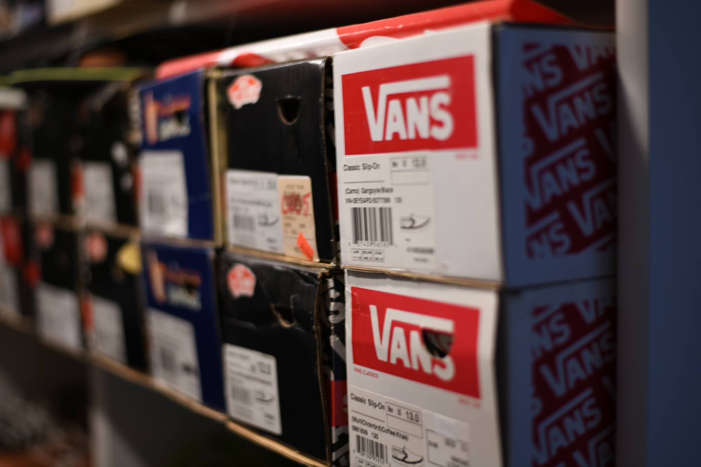
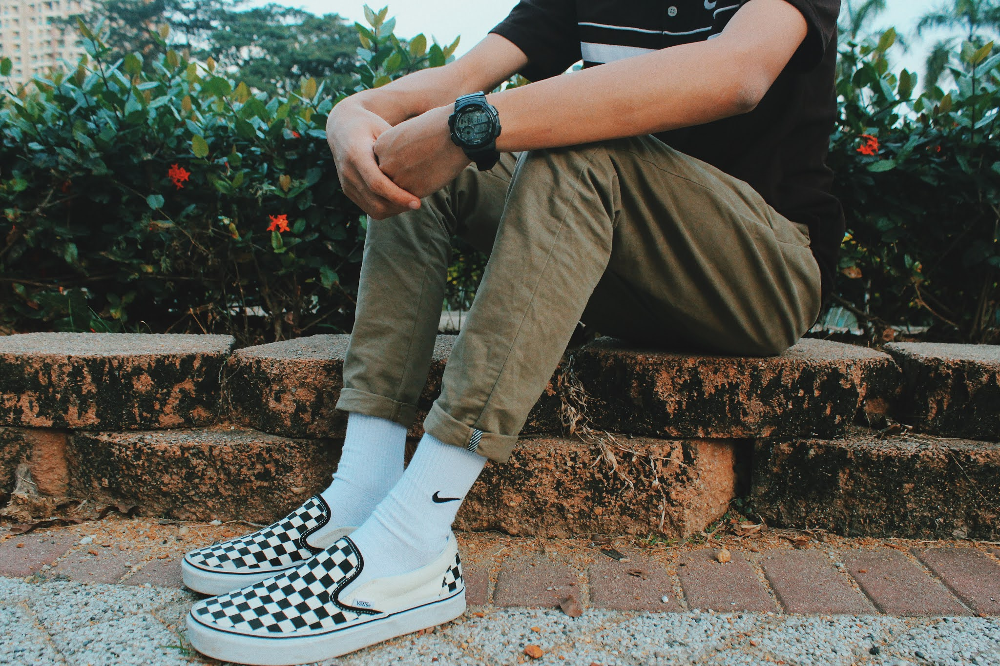

Sepatu Vans yang selalu Identik Sama anak Skateboard
Hay Hay You, kalau bicara mengenai brand sepatu yang melekat dengan para skateboarder, brand apa yang langsung lo pikirkan, sob? Yosh, Vans menjadi salah satu brand sepatu sneakers yang kerap digunakan para skateboarder. Mau tahu kenapa? Yuk!

Siapa sih yang nggak tahu brand sepatu Vans? Vans adalah salah satu brand sepatu sneakers yang sangat populer di dunia. Sejak didirikan pada tahun 1966 lalu, sepatu ini biasanya selalu dipakai oleh orang-orang yang hobi bermain skateboard dan penggila olahraga freestyle. Bahkan sampai saat ini pun, brand sepatu Vans tetap menjadi salah satu sepatu sneakers favorit para millennials, baik pria maupun wanita. Nggak hanya dikhususkan sebagai alas kaki untuk berolahraga skateboard aja, penggunanya pun kini kerap memakainya untuk aktivitas sehari-hari. Bisa dibilang, sepatu ini sudah menjadi sangat umum digunakan oleh semua kalangan.
Lalu, bagaimana sebenarnya sejarah sepatu Vans bisa menjadi lambang identitas para skateboarder? Berikut ini ulasan selengkapnya, sob.
Lahir di Tahun 1966.
Perusahaan Vans didirikan pada 1966 di Anaheim, California, Amerika Serikat oleh dua orang, yaitu Paul Van Doren dan Jim Van Doren. Mereka kemudian bekerja sama dengan Gordon Lee dan Serge Delia.
Awalnya perusahaan ini bernama The Van Doren Rubber Company, yang bergelut di bidang karet. Penjualan sepatu mereka lakukan menggunakan sistem pre-order alias pemesanan terlebih dahulu. Di hari pertama buka, Vans mendapat pesanan sebanyak 12 pasang sepatu.
Punya Nomor Seri.
Tadinya, masing-masing tipe sepatu sneakers Vans nggak ditandai dengan nama, melainkan nomor. Sepatu rilisan pertama mereka adalah Vans #44 (sekarang dikenal sebagai Vans Authentic). Bahannya kanvas tebal, berulir nilon, dan menjadi best seller, terutama warna hitam. Di samping itu, nama-nama sepatu seperti Vans The Era dulu disebut Vans #95, Old School disebut Vans #36, dan Vans #98 yang sekarang lebih dikenal dengan Vans Classic slip on.
Debut Vans Slip On.
Vans tipe slip on merupakan sneakers paling laris sampai sekarang. Sepatu ini mulai dikenal setelah karakter Jeff Spicoli yang diperankan oleh Sean Penn, mengenakan sepatu Vans tipe slip on dengan gambar kotak-kotak layaknya papan catur dalam film Fast Times at Ridgemont High di tahun 1982.
Dari situ, Vans langsung kebanjiran order, bukan hanya di seputar kawasan California. Tapi juga merambah ke seluruh penjuru Negeri Paman Sam. Inilah awal cerita Vans menjadi sneakers terlaris di dunia.
Sebagai Identitas Skateboarder.
Menginjak tahun 1970-an, Vans dipilih oleh para skateboarder dan pemain BMX. Hal itu membuat Vans pada akhirnya melengkapi sepatu buatannya dengan material kulit di bagian kaki dan tumit supaya pemakainya merasa lebih nyaman. Lima tahun berselang, mereka juga merilis sepatu custom untuk penggila skateboard, disertai punggung, kerah lunak, dan berbagai kombinasi warna.
Puncaknya, pada tahun 2004, Vans memberikan kesempatan bagi siapa aja yang ingin memesan sepatu Vans dengan desain sesuai keinginan pembeli. Itulah sejarah perkembangan brand sepatu sneakers Vans yang menjadi lambang identitas para skateboarder hingga sekarang. Nggak hanya dipakai untuk main skateboard, sepatu Vans juga dikenakan untuk berbagai aktivitas.